ביקורת פרוזדור

I'm at a פרוזדור, trying to call home All of my change I spent on you Where have the times gone? Baby it's all wrong Where are the plans we made for two?
—John Locke
מבקרים אורחים
עדיאל קריספין
- גובה: 1.80
- גדל בארצות הברית
שמע...
מבקרים אורחים
פאר שגיב
- צמחוני
- היה באפריקה ב-7.10
קולולולולו
חווית ההגעה
- חנינו בחניון ליד הפרוזדור
- הלכנו לפרוזדור
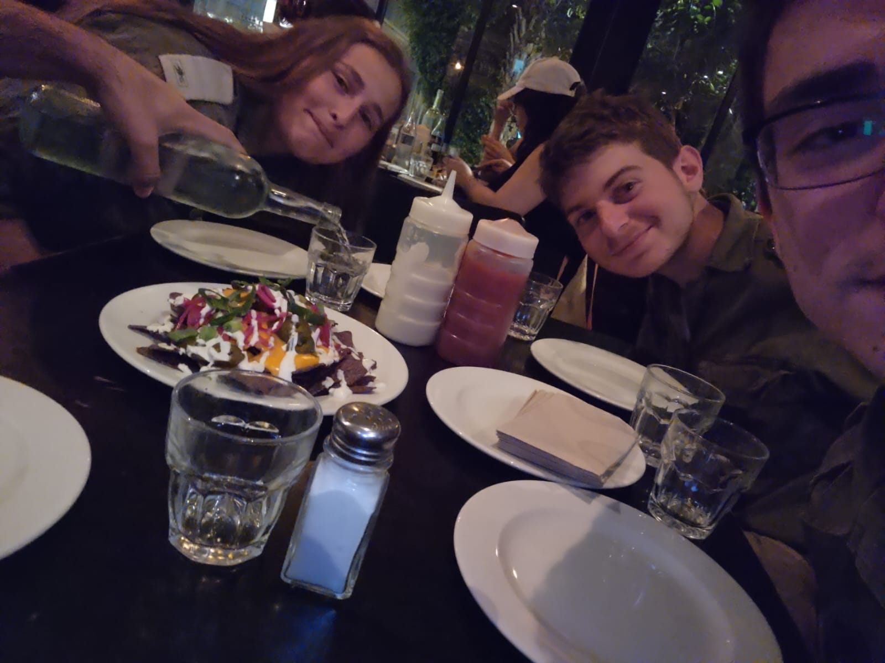
ראשונות
נאצ'וס (חד פעמי - כיום אין בתפריט)
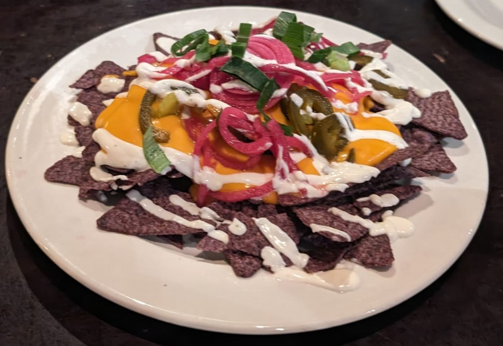- נאצ'וס שחור - מאוד פרוגריסיבי
- לא חריף למרות שזה נראה די חריף
- שחר העריכה שזה היה חריף רק בפלפל ולכן יכלה לאכול סביבו
- נראה מאוד מפתה בתפריט; בפועל - הטעם סביר.
ראשונות
צ'יפס אנימל סטייל
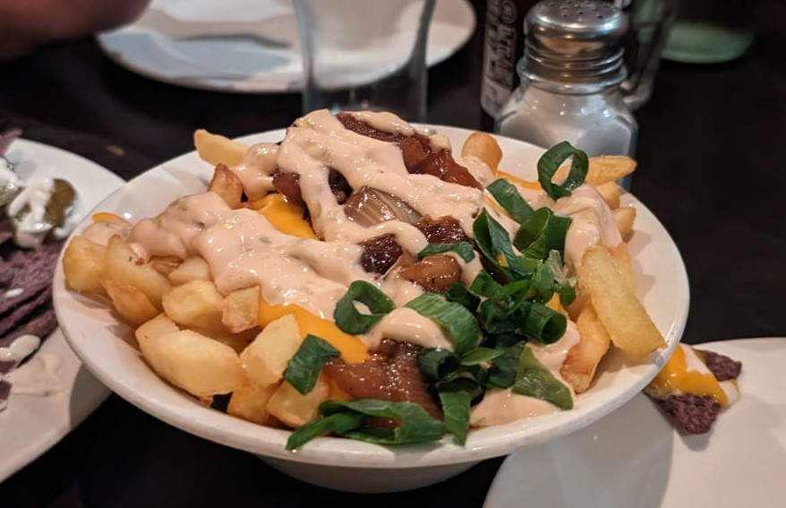- וואו.
- פשוט וואו.
- ממש טעים
- הגבינה המותכת ממש נוזלית, דביקה וטעימה
- שחר חשבה שזה היה אנימה סטייל ולכן התלהבה (אל תגידו לה)
- אהבנו את התוספת של הבצל הירוק

המבורגר #1 - אל תזמין (שחר)
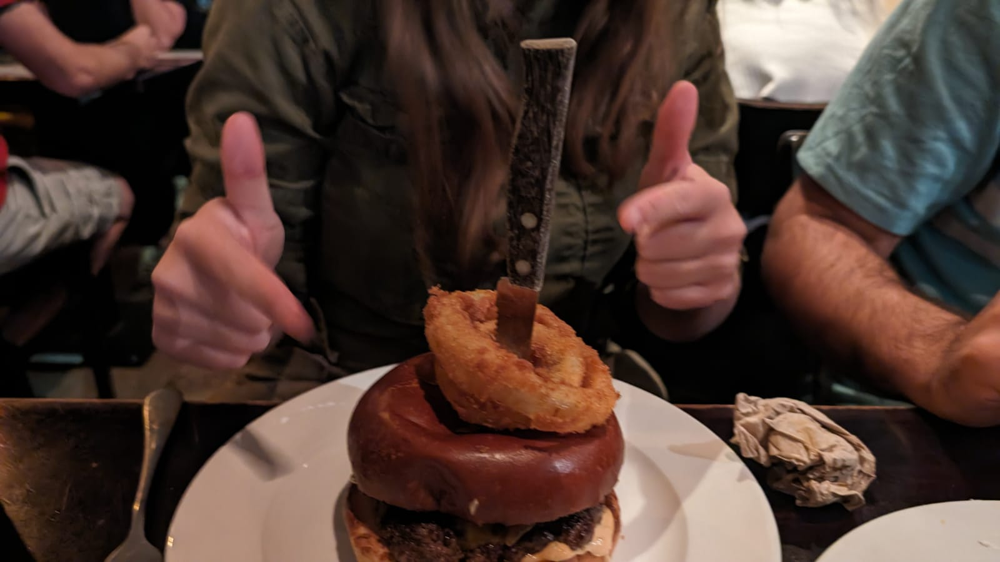- היה טעים
- דווקא כדאי להזמין
- הרוטב הכתום היה וואו!
- "הכתום זה השחור החדש" (???)
- הקציצה הייתה מאוד עסיסית ולא יבשה
↑
(תמונה שצולמה באותו יום ולא חודש לאחר הביקור הראשוני)
←
המבורגר #2 - המשרד של אבא (לירון)
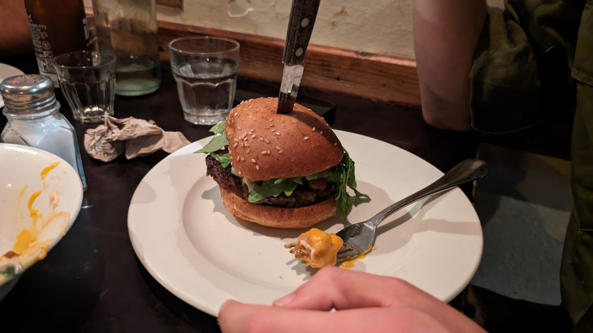- היה טוב
- עסיסי
- הגבינה הייתה טעימה
- יאמי יאמי
- לא היה לזה טעם של המשרד של אבא שלי :(
- "זה נכון, אני הייתי במשרד של אבא של לירון" - שחר
המבורגר #3 - גיהנום (אלון)
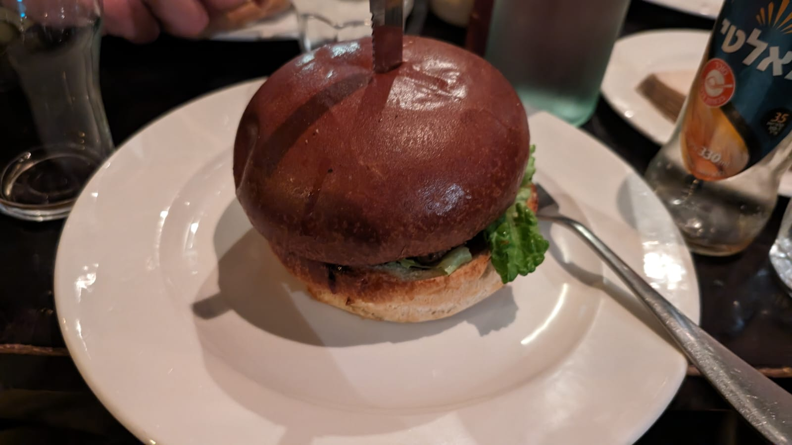- אחלה חזות
- נראה ונשמע מאוד חריף
- בפועל לא הכי חריף
- הקציצה הייתה טיפה יבשה
ביקורות אורחים
הצמחוני (פאר)
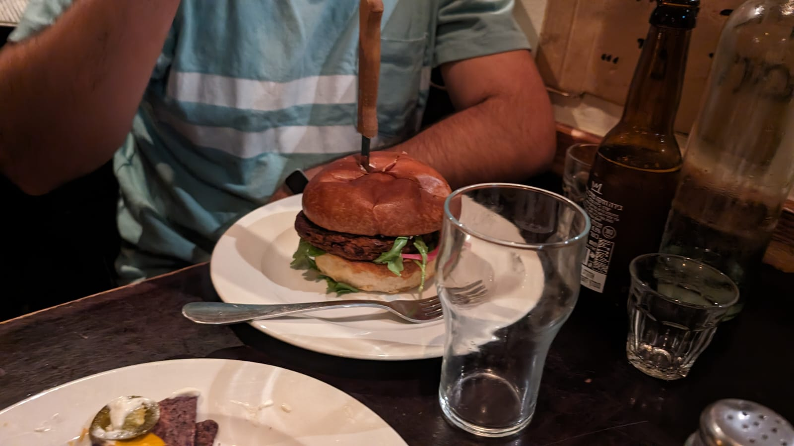
אני אהבתי את ההמבורגר שלי, על אף שהקציצה הצמחונית הייתה אותה קציצה שיש בכל מסעדה.
החודשי (עדיאל)
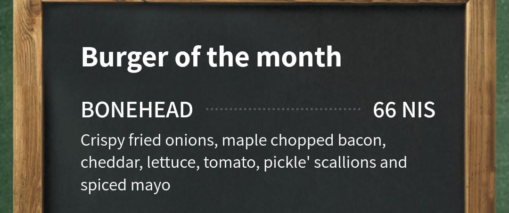
לא צילמנו :(
כמו כן, אני נהנתי מההמבורגר שלי. עם זאת, ניכר היה שהלחמניה שאני קיבלתי הייתה מעט יבשה.
בונוס — רטבים
- רצינו לציין לטובה את מבחר הרטבים בפרוזדור
בונוס — טפיוקה
- הלכנו אחרי הפרוזדור לשתות באבל-טי
- רצינו לציין לטובה את הטפיוקה
- שכחנו לצלם תמונה
טוטו 3>
- להקה
- יש להם שני שירים
- השיר הראשון
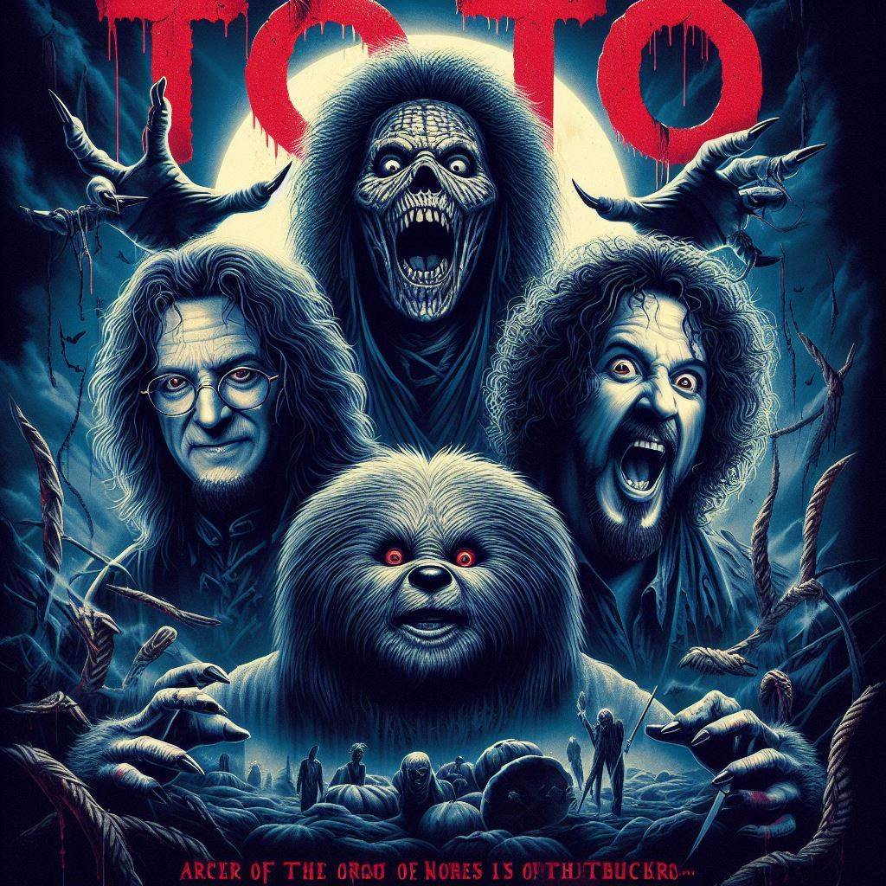
טוטו 3>
- להקה
- יש להם שני שירים
- השיר הראשון
- השיר השני
Nehfamim VS Toto
| Toto | Nehfamim |
|---|---|
| היו נחפפים (חפיפות טוטו לוקחות ~שנה) | נחפפים נצחיים |
| סירבו להופיע ב-Rolling Stone | סירבו לתעד |
| לא היו באפריקה לפני שכתבו את Africa | כן היו באפריקה לפני שכתבו את Africa |
| כתבו שירים | כתבו דרייברים |
מה זה טוטו בשבילנו?
- שמענו אותם בדרך לפרוזדור
-
הם ליוו אותנו לאורך החוויה
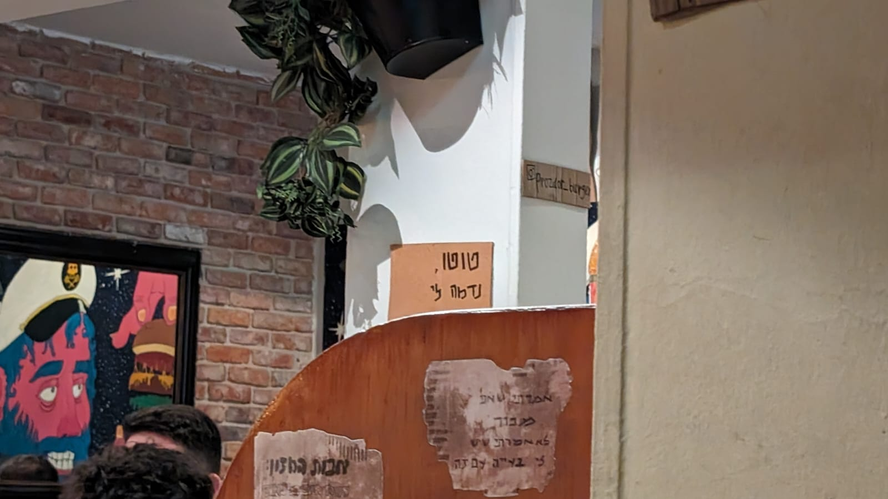 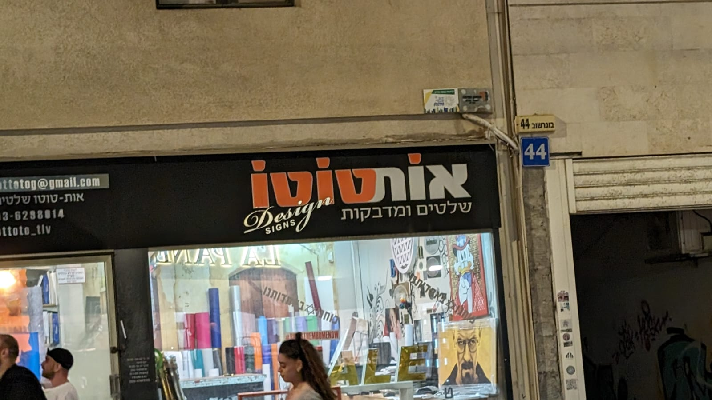
-
מייצגים את ערכי הנחפמים
- אפריקה